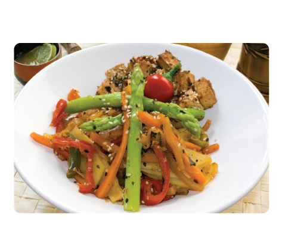

Stir-Fry Tofu with Vegetables
Ingredients
6 tablespoons olive oil
8 ounces firm tofu, well drained, cut into 1/2-inch cubes
2 tablespoons minced peeled fresh ginger
3 teaspoons Tailai USA Minced Garlic
2 tablespoons black or white sesame seeds
1 pound fresh shiitake mushrooms, stems trimmed, caps sliced
1cups broccoli florets
1 cup fresh asparagus (ends cut)
2 red bell peppers, cut into strips
2 bunches green onions, cut into 1-inch pieces
1/2 cup sake or dry white wine
1/4 cup soy sauce
1 tablespoon oriental sesame oil
Instructions
Heat 3 tablespoons olive oil in large nonstick skillet or wok over high heat. Add tofu; stir gently until starting to brown around edges, about 4 minutes. Using slotted spoon, transfer to bowl. Add 3 tablespoons oil, ginger and garlic to skillet; stir 1 minute. Add mushrooms; stir-fry until tender and golden around edges, about 5 minutes. Add broccoli, bell peppers, asparagus and green onions; stir-fry until vegetables are crisp-tender, about 3 minutes. Return tofu to skillet; stir to mix. Stir in sake, soy sauce and sesame oil; simmer 1 minute. Season with Tailai USA’s Sea Salt and Tellicherry Pepper. Transfer to large bowl and serve.